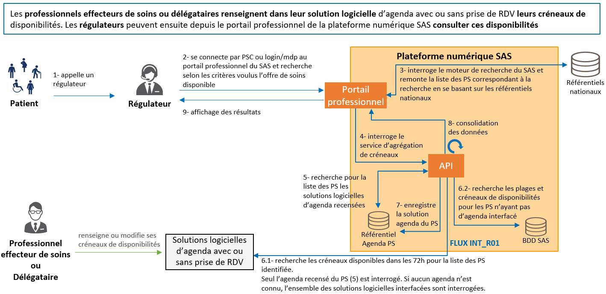
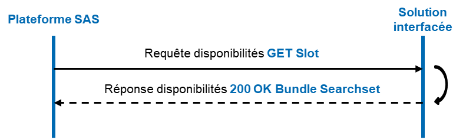
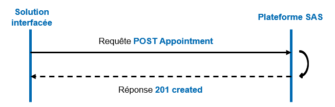
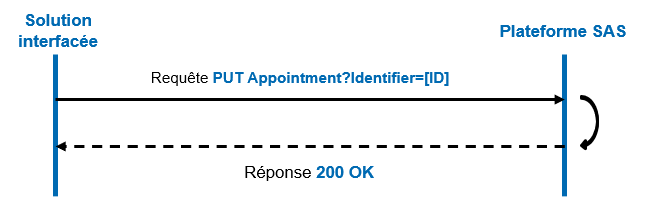

Service d'Accès aux Soins
0.1.0 - ci-build

Service d'Accès aux Soins
0.1.0 - ci-build

Service d'Accès aux Soins - Local Development build (v0.1.0) built by the FHIR (HL7® FHIR® Standard) Build Tools. See the Directory of published versions
A ce jour, les API ont pour vocation de répondre aux cas d’usage suivants :
Pour les cas d’usage couverts par ces API :
L’objectif de cette interface, flux INT_R01, est de permettre l’agrégation des créneaux de disponibilités, des solutions logicielles d’agenda avec prise de RDV, dans la plateforme numérique SAS. Le schéma de présentation générale ci-dessous illustre ce cas d’usage :
|

|
| Figure 1 - Présentation recherche de créneaux |
Les créneaux de disponibilités sont renseignés par les professionnels effecteurs de soins ou délégataires dans leur solution logicielle d’agenda. Le flux décrit ci-dessous permet de récupérer et d’afficher dans la plateforme numérique SAS les créneaux selon les modalités définies lors des Groupes de Travail en bilatérales avec l’ANS. Lors d’une recherche d’offre de soins sur la plateforme numérique SAS, le moteur de recherche va s’appuyer sur les référentiels nationaux pour identifier l’offre correspondant aux critères de recherche. Une liste de 1 à 25 RPPS/ADELI est envoyée aux solutions logicielles éditeurs pour identifier les créneaux de disponibilités des professionnels de santé (PS) correspondants. Les types de créneaux remontés dans la plateforme sont :
Le schéma ci-dessous illustre les échanges à mettre en oeuvre entre la plateforme numérique SAS, et les différentes solutions interfacées :
|

|
| Figure 2 - Flux recherche de créneaux |
L’objectif de cette interface, flux INT_R03, est de permettre la transmission des données liées à l’usage de la fonctionnalité de prise de RDV par les régulateurs provenant de la plateforme numérique SAS, dans les solutions logicielles d’agenda. Le schéma de présentation générale ci-dessous illustre le cas d’usage :

|
| Figure 3 - Présentation gestion de rendez-vous |
Après avoir sélectionné un créneau depuis la plateforme numérique SAS et avoir été redirigé vers la plateforme de prise de RDV éditeur, le régulateur prend directement RDV pour le patient dans la solution éditeur. Dès que le RDV est pris, les informations associées sont transmises à la plateforme numérique SAS via le flux INT_R03 mis en place. Lors de chaque mise à jour du RDV (annulation, modification, honoré, non honoré), l’information est transmise par le biais de ce flux à la plateforme numérique SAS. Ces données sont utilisées pour suivre l’activité réelle engendrée par le SAS, permettre l’analyse du dispositif de l’avenant 9 par la CNAM et assurer la traçabilité des RDV patients pour le suivi dans le LRM à terme. Pour la mise en place de ce flux, il est nécessaire de s’assurer d’une technologie commune aux différentes plateformes. Les échanges reposent sur des webservices se basant sur l’API REST du standard HL7 FHIR, et respectant les spécifications des flux 6a et 6b du volet Gestion d’agendas partagés du Cadre d’Interopérabilité des Systèmes d’Information de Santé (CI-SIS).
Lorsqu’un régulateur prend RDV pour un patient au sein de la solution logicielle éditeur, celle-ci transmet une requête de création de RDV. Le schéma ci-dessous illustre l’échange à mettre en oeuvre :
|

|
| Figure 4 - Flux création de rendez-vous |
La mise à jour des données du RDV peut porter sur chacun des éléments de la ressource transmise (dates du créneau, PS effecteurs des soins, statut du RDV, etc.). Le schéma ci-dessous illustre l’échange à mettre en oeuvre :
|

|
| Figure 5 - Flux mise à jour de rendez-vous |